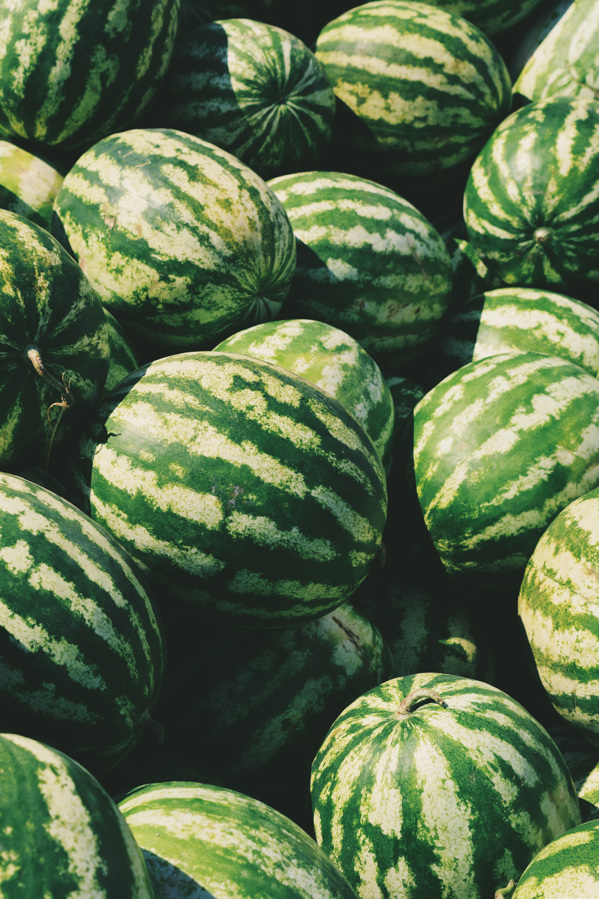

Watermelon (Citrullus lanatus) is a scrambling and trailing vine in the flowering plant family Cucurbitaceae. The species originated in southern Africa, with evidence of its cultivation in Ancient Egypt. It is grown in tropical and subtropical areas worldwide for its large edible fruit, also known as a watermelon, which is a special kind of berry with a hard rind and no internal division, botanically called a pepo. The sweet, juicy flesh is usually deep red to pink, with many black seeds, although seedless varieties have been cultivated. The fruit can be eaten raw or pickled and the rind is edible after cooking.
